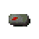
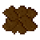
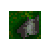

| Wygl¹d obiektu /ew. opis/ | Znak | Opis |
| A | Drzewo iglaste | |
| B | Drzewo iglaste | |
| C | Drzewo iglaste | |
 |
D | Drzewo liœciaste |
| E | Drzewo liœciaste | |
| F | Drzewo liœciaste | |
| G | Drzewo suche | |
| a | Pieñ | |
| b | Kamienie | |
| c | Kamienie | |
| d | Kamienie | |
| e | Tabliczka | |
| f | Œcie¿ka | |
| g | Sadzawka | |
| h | Pal | |
| i | S³upek z czaszk¹ | |
| j | Kamieñ wysoki | |
| k | Studnia | |
|  | l | Kamienny stolik ofiarny |
| m | Kamieñ du¿y | |
| n | Kamienie | |
| o | Ognisko ma³e | |
| p | Ognisko du¿e | |
| . | Uzdrowisko | |
| / | Miejsce przemiany | |
| ^ | Miejsce docelowe jednostki specjalnej | |
| Tak oznaczona jest jednostka specjalna (posiada imiê), któr¹ mamy doprowadziæ do oznaczonego miejsca. | * | Jednostka specjalna |
| Teren tak zaznaczony zostanie zostanie odkryty ju¿ na pocz¹tku misji. | + | Odkryty teren |
| Kamera bêdzie ustawiona w tym miejscu na pocz¹tku misji. | = | Miejsce rozpoczêcia misji |
| Miejsce, w którym przeciwnik bêdzie wypasa³ swoje krowy. | - | Pastwisko wroga |
| Miejsce, w którym przeciwnik bêdzie gromadzi³ swoje jednostki przed atakiem na Twoj¹ wiochê. | ? | Miejsce zbiórki |
| "spacja" | Trawa | |
|  | q | Sucha ziemia |
| w | Woda | |
| t | Droga | |
| r | Palisada | |
| 1 | Most | |
| 2 | Most | |
| 3 | Most | |
| 4 | Most | |
| 5 | Most | |
 |
6 | Most |
| 7 | Most | |
| 8 | Most | |
 |
s | Przejœcie miêdzy ska³ami. |
| Ú | Ska³y | |
 |
Ä | Ska³y |
| · | Ska³y | |
| º | Ska³y | |
| Ó | Ska³y | |
| ¼ | Ska³y | |
| Í | Ska³y | |
|  | É | Ska³y |
| Ô | Ska³y | |
| ³ | Ska³y | |
| ¸ | Ska³y | |
| Ù | Ska³y | |
| x T | Krowa | |
| y U | Drwal | |
 |
z W | Myœliwy |
| 9 X | Kap³anka | |
| 0 Y | Kap³an | |
| : Z | Miecznik | |
| ; # | W³ócznik | |
 |
< " | Rycerz |
| > % | NiedŸwiedŸ | |
| , & | Strzyga | |
| H N | Budynek g³ówny | |
 |
I O | Obora |
| J P | Chata mieszkalna | |
 |
L R | Chata wojów |
| M S | Dwór rycerza | |
| K Q | Dwór mocy |
UWAGA!!!
Podwójne symbole znajduj¹ce siê w rubryce "Znak" oznaczaj¹, ¿e istnieje mo¿liwoœæ umieszczenia danego obiektu nale¿¹cego do nas (pierwszy symbol) jak i do wroga (drugi).